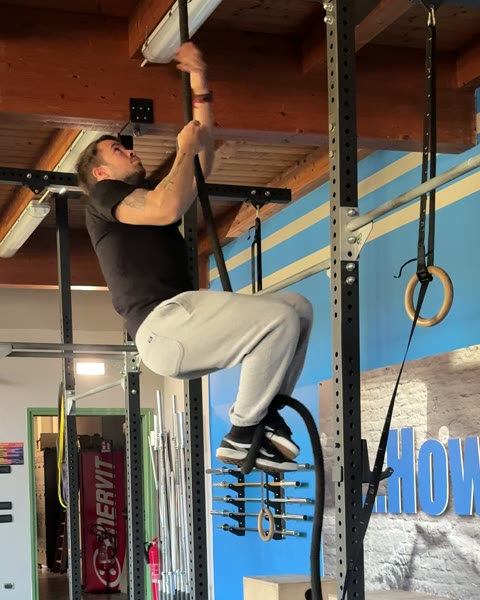
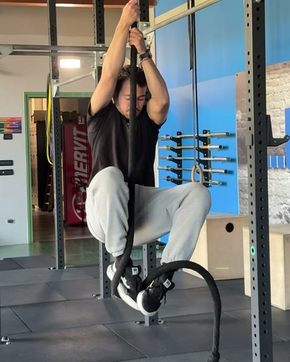
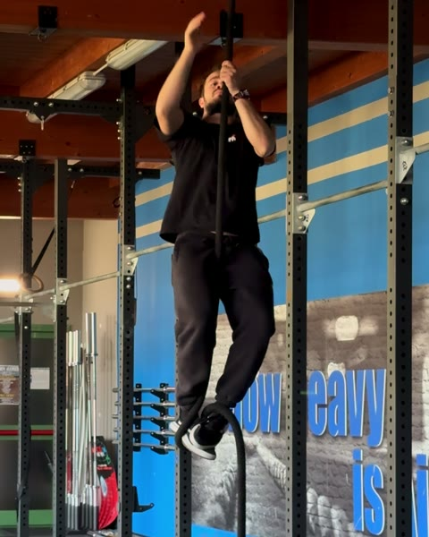

FR 07 · J-Hook Rope Climb
Guida gratuita

Rope Climb:
da dove parti
Sei test per trovare il tuo gradino. Due sessioni di fila per salirlo.
Filipe Ramos · coach di ginnastica · @coachfiliperamos
Scarica il PDFSulla corda le braccia tengono e le gambe salgono. Se il piede scivola, la corda la sali di braccia, e dopo due salite hai finito.
Il J-hook è un blocco dei piedi: la corda passa sotto un piede e l'altro la schiaccia da sopra. Il difficile è che in salita i piedi non li vedi. Per questo la scala parte seduto su un box, prima guardando e poi senza guardare. Poi ti alzi in piedi sul blocco, poi lo fai da appeso, e solo alla fine sali di un passo. Intanto le sospensioni, il floor rope climb e le negative ti costruiscono la presa. Questa è la scala del programma J-Hook Rope Climb dell'app FAR Training.
1. Il test: trova il tuo gradino
Fai i test in ordine, riposando quanto ti serve tra uno e l'altro. Ti fermi al primo che non passi: quello è il tuo gradino. Ti servono una corda e un box accanto alla corda.
-
0
Seated J-Hook Drill · guardando
5 blocchi. Seduto sul box, guardi la corda e i piedi. Passi la corda sotto un piede, la blocchi con l'altro, controlli e la sciogli. È il punto di partenza.
-
1
Seated J-Hook Drill · senza guardare
5 blocchi. Seduto sul box, sguardo in alto lungo la corda. I piedi trovano la corda al tatto, fanno il J-hook e lo sciolgono. Lo passi se non guardi mai in basso.
-
2
Seated to Standing J-Hook Drill
3 ripetizioni. Dal box fai il blocco senza guardare e ti alzi in piedi sopra. I piedi reggono tutto il tuo peso, senza scivolare.
-

3Hanging J-Hook Drill
3 ripetizioni. Appeso, piedi staccati da terra: porti su le ginocchia, fai il blocco senza guardare e ci sali in piedi. Qui non si sale ancora.
-
4
J-Hook Rope Climb · un passo
3 ripetizioni. Un solo blocco, senza guardare. Ti alzi in piedi sopra e vai più in alto che puoi con quel blocco, senza rifare i piedi. Poi scendi.
-

5Basket/J-Hook Rope Climb
3 tentativi, 2' di recupero. Sali la corda più alta che riesci con sicurezza, rifacendo il blocco a ogni passo.
Li passi tutti? La corda la sali di gambe. Per una corda più alta ripeti il blocco tutte le volte che serve, e per scendere fai lo stesso movimento al contrario. Attenzione alla discesa.
2. Cosa allenare sul tuo gradino
Ogni gradino è una sessione da fare due giorni di fila, poi il test. Lo passi e sali di gradino. Sono le dosi con cui si parte nell'app. Nel floor rope climb sei sdraiato a terra con la corda tra le gambe e ti tiri su con i piedi a terra: più tieni le ginocchia distese, più pesa, e qui lo vuoi il più pesante possibile. Nella negativa parti in alto aiutandoti con il box e scendi in almeno 3 secondi, senza far scivolare le mani. Nella sospensione passiva lasci salire le spalle, in quella attiva le tiri giù, lontano dalle orecchie.
Gradino 1 Non passi il test 1
| Esercizio | Dose | Recupero |
|---|---|---|
| Seated J-Hook Drill · guardando | 5 × 3 | 20" |
| Rope Climb Passive Dead Hang | 3 × 10" | 20" |
| Floor Rope Climb | 3 × 3 | 45" |
Non provare ancora ad alzarti. Comincia con calma.
Gradino 2 Non passi il test 2
| Esercizio | Dose | Recupero |
|---|---|---|
| Seated J-Hook Drill · senza guardare | 5 × 3 | 20" |
| Rope Climb Passive Dead Hang | 3 × 15" | 20" |
| Floor Rope Climb | 3 × 4 | 45" |
Ancora seduto: il blocco lo fai al tatto, non ti alzi.
Gradino 3 Non passi il test 3
| Esercizio | Dose | Recupero |
|---|---|---|
| Seated to Standing J-Hook Drill | 5 × 3 | 20" |
| Rope Climb Passive Dead Hang | 3 × 20" | 20" |
| Floor Rope Climb | 3 × 5 | 45" |
Quando ti alzi, senti tutto il peso sui piedi. Se scivolano, stringi di più i piedi contro la corda.
Gradino 4 Non passi il test 4
| Esercizio | Dose | Recupero |
|---|---|---|
| Hanging J-Hook Drill | 10 × 1 | 15" |
| Rope Climb Active Dead Hang | 3 × 12" | 20" |
| Rope Climb Negative Pull Up | 3 × 3 | 1' |
Porta su le ginocchia un po' di più ogni volta, ma resta in basso: alleni solo il blocco, finché non lo senti saldo.
Gradino 5 Non passi il test 5
| Esercizio | Dose | Recupero |
|---|---|---|
| J-Hook Rope Climb · un passo | 10 × 1 | 20" |
| Rope Climb Active Dead Hang | 3 × 15" | 20" |
| Rope Climb Negative Pull Up | 3 × 5 | 1' |
Ginocchia sempre più alte, così ti servono meno passi per arrivare in cima. Prima di rifare il blocco, abituati a uno solo ben saldo.
Il programma completo
Nell'app FAR Training ogni gradino è una fase: le due sessioni, le note di ogni esercizio e il test di fase alla fine. Il programma J-Hook Rope Climb arriva sull'app: lo annuncio su @coachfiliperamos.
Non sai se hai passato un test? Mandami il video in DM su @coachfiliperamos e ti dico da che gradino partire.

Il programma completo
Nell'app FAR Training ogni gradino è una fase: le due sessioni, le note di ogni esercizio e il test di fase alla fine. Il programma J-Hook Rope Climb arriva sull'app: lo annuncio su @coachfiliperamos.
Non sai se hai passato un test? Mandami il video in DM su @coachfiliperamos e ti dico da che gradino partire.
Alleni in un box? Il seminario lo faccio da voi.
Apri @coachfiliperamos